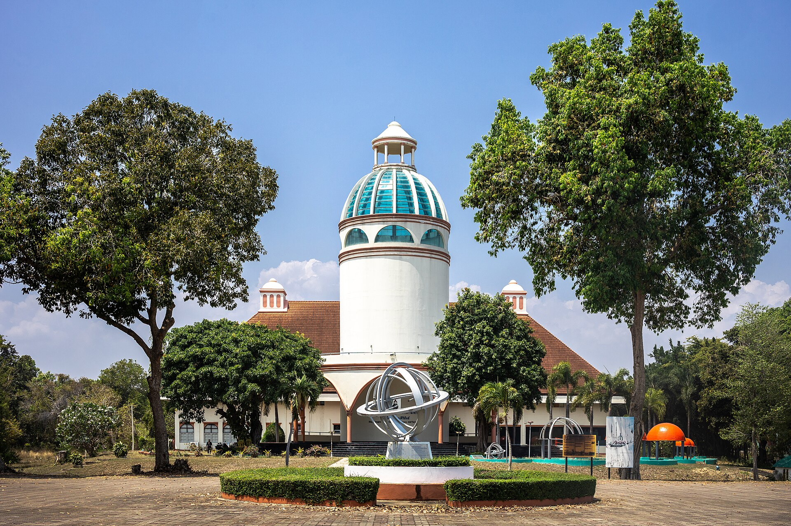

06.00 – 07.00 น.
ชมแสงแรกที่สะพานสราญวิถี & เดินตลาดเช้าชุมชน
สูดอากาศบริสุทธิ์รับลมทะเลอ่าวประจวบฯ ยามพระอาทิตย์ขึ้นที่สะพานสราญวิถี จากนั้นแวะเดินตลาดสดเทศบาลชมวิถีชีวิตชาวบ้านยามเช้า
เที่ยวบ้านเรา จ.ประจวบคีรีขันธ์
จัดลำดับเส้นทางท่องเที่ยวอำเภอเมืองประจวบคีรีขันธ์ตั้งแต่เช้าจรดเย็น เดินทางต่อเนื่องไม่ย้อนเส้นทาง ครบทั้งตลาดชุมชน อาหารพื้นถิ่น จุดชมวิว และจุดแวะซื้อของฝาก
เรียงลำดับตามช่วงเวลาและทิศทางการเดินทางจริงจากใจกลางเมืองมุ่งลงทางทิศใต้สู่คลองวาฬ–หว้ากอ:
สูดอากาศบริสุทธิ์รับลมทะเลอ่าวประจวบฯ ยามพระอาทิตย์ขึ้นที่สะพานสราญวิถี จากนั้นแวะเดินตลาดสดเทศบาลชมวิถีชีวิตชาวบ้านยามเช้า

อิ่มอร่อยกับไข่ลวกร้อนๆ 2 ฟอง (20 บาท) เสิร์ฟคู่ชาร้อนฟรี และกาแฟโบราณหรือชาไทยหอมเข้ม เตรียมพร้อมก่อนเดินขึ้นจุดชมวิว

เดินขึ้นบันได 396 ขั้นในอากาศยามเช้าที่ยังไม่ร้อน สักการะพระบรมสารีริกธาตุ รอยพระพุทธบาทจำลอง และถ่ายภาพโค้งน้ำเมืองสามอ่าวจากมุมสูง

แวะกราบขอพรองค์หลักเมือง "จตุโชค" ณ อาคารจตุรมุขยอดปรางค์ 9 ชั้น ถนนสละชีพ ซึ่งอยู่ห่างจากเชิงเขาช่องกระจกเพียงไม่กี่ร้อยเมตร

เดินทางเข้าเขตกองบิน 5 แวะชิมหมึกแดดเดียว แกงคั่วสับปะรด และอาหารทะเลสดริมชายหาดอ่าวมะนาว พักผ่อนฟังเสียงคลื่น ถ่ายรูปป้ายโลมาคู่ และแวะชมค่างแว่นถิ่นใต้เชิง เขาล้อมหมวก

ขับรถเลียบลงทางทิศใต้สู่ ต.คลองวาฬ ชมรอบแสดงดำน้ำให้อาหารปลาเวลา 14.00 น. ในพิพิธภัณฑ์สัตว์น้ำหว้ากอ และเดินชมนิทรรศการอวกาศแอร์เย็นสบาย

เลือกซื้อหมึกแห้ง กุ้งแห้ง น้ำพริกกุ้งเสียบ น้ำพริกปลากุเลา กะปิคลองวาฬ และขนมปังชีสเชคไส้สับปะรด (หากตรงกับวันศุกร์–เสาร์ แวะเดินถนนคนเดินริมอ่าวประจวบฯ ต่อได้ถึงค่ำ)
ติ๊กเลือกรายการค่าใช้จ่ายที่คุณวางแผนไว้ เพื่อคำนวณงบประมาณรวมโดยประมาณ:
สำหรับผู้ที่มีเวลาเที่ยวต่อวันที่สอง สามารถเชื่อมโยงเส้นทางไปอำเภอใกล้เคียง เช่น กุยบุรี ปราณบุรี หัวหิน หรือทับสะแก–บางสะพาน ตามแผนที่แนะนำของ ททท. สำนักงานประจวบคีรีขันธ์